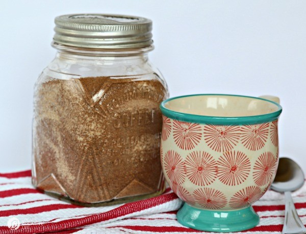

Russian Tea

Description
This Russian Tea Recipe from the 70's is a classic drink made with Tang, instant tea, and spices. Serve piping hot or over ice.
Ingredients
- 1-1/2 cups unsweetened instant tea powder
- 2 cups Tang (or orange powder drink mix)
- 1 tbsp lemonade powder mix (sweetened or unsweetened)
- 2 cups sugar
- 1 tsp ground cloves
- 2 tsp ground cinnamon
- 1/2 tsp ground nutmeg (optional)
Steps
- Pour all ingredients into a large plastic bag or Ziploc storage container.
- Mix ingredients well, either by stirring or shaking in a sealed container.
- Store in a sealed containter that keeps out moisture.
- Mix 3 to 4 tablespoons of the mix into a mug or glass of hot or cold water.